Flowing back: three options on the K2 joint
In K2 the back of the joint was a separate block added onto the pad, which left a sharp step and a line above the joint, so it read as two parts. In these options the pad is a single shell whose thickness changes smoothly. It is thick only where the joint and the button pocket need it, and it thins back to the 5 mm shell along long, soft curves. The tenon still finishes flush with the back. Every picture is in one colour to show the finished look. This is for review only.
Chosen: F3 as the base 2026-11-14
- Thin top kept. Above the button pocket the shell goes back to 5 mm.
- Pocket rim fixed. The point where the back starts to thin now sits higher (z +8 instead of +2), so the pocket's top rim stays at full depth.
- Strap slots reinforced. The shell is 7 mm round each forehead-strap slot instead of 5 mm, blended in smoothly. The extra 2 mm is on the outside only, so the foam side doesn't change. The material between each slot and the front edge of the wing is 13.5–23 mm wide, with 8 mm above the slot.
- The pictures marked F3 on this page now show this base. The model still shows no clashes, the screwdriver paths are clear, and nothing touches either head model. Pad volume is 284 cm³.
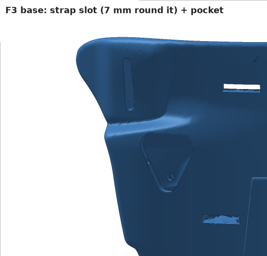
The options
| Outline | Where the back is thick | Pad volume | |
|---|---|---|---|
| K2 (before) | Today's | A separate block with hard edges | 194 cm³ |
| F1: soft spine | Today's, with the corners smoothed and a chin under the joint | Only along the spine, plus a soft raised area round the button pocket | 257 cm³ |
| F2: flow recommended | New: one continuous curve from the chin to a softer temple wing | Same as F1 | 270 cm³ |
| F3: full back | New (as F2) | Thick across the whole back at button height, like a car headrest, fading out over the top | 284 cm³ (base, with the strap reinforcement) |
The extra volume is mostly in the lower back, behind the roll under the skull, where the back now carries straight down to meet the tenon. Printed with normal infill, it is not solid plastic.
Outlines
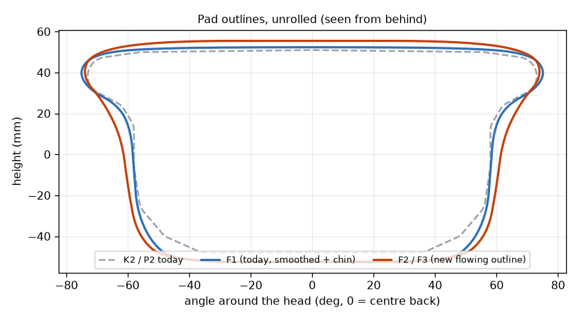
Side by side
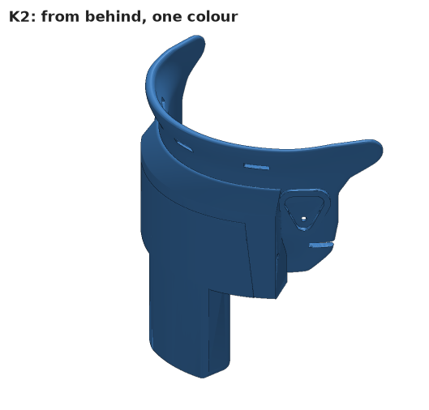
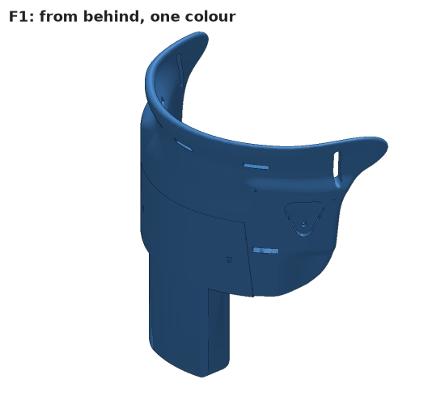
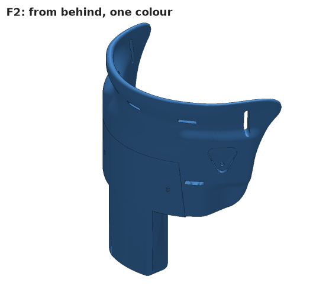
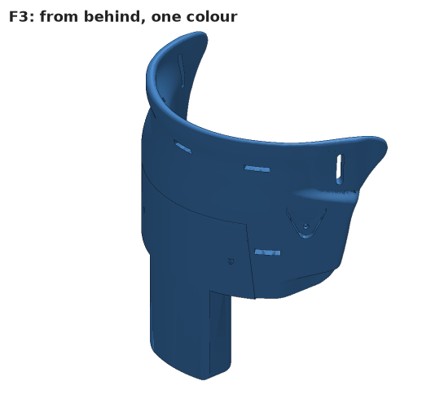
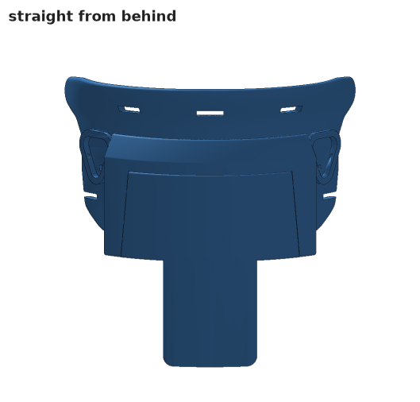
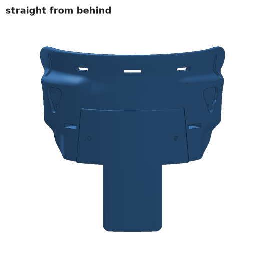
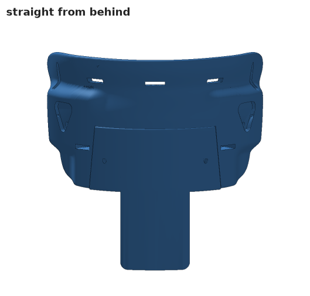
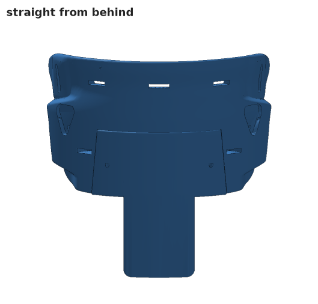
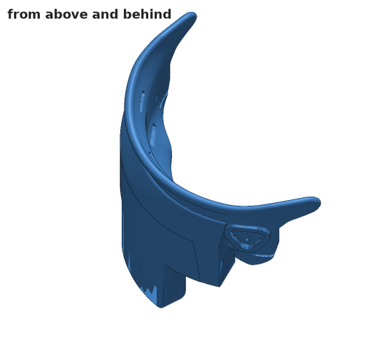
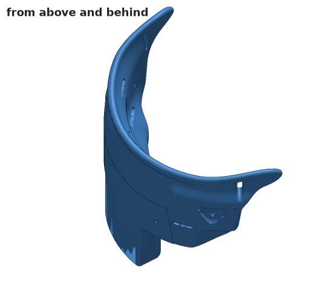
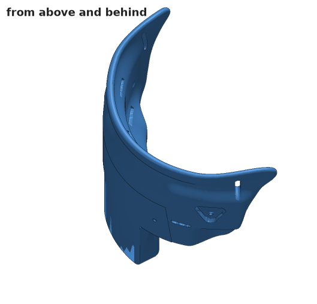
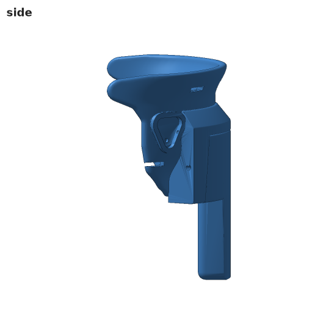
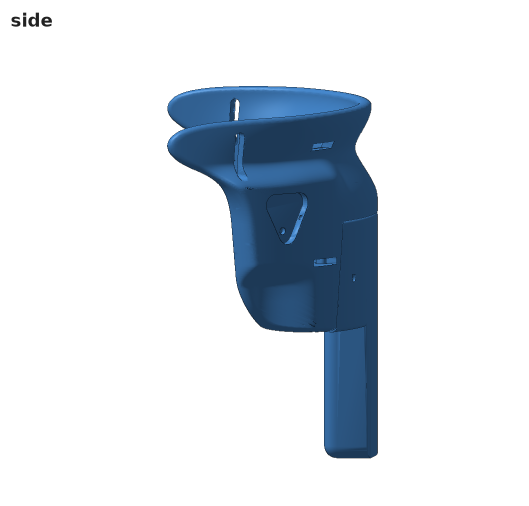
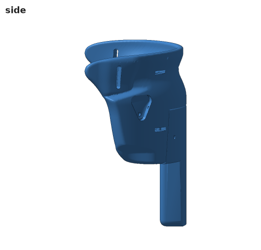
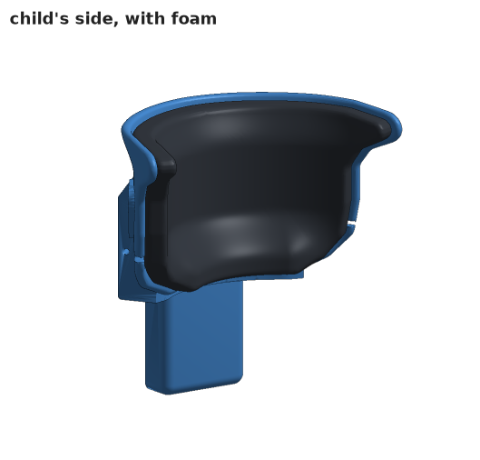
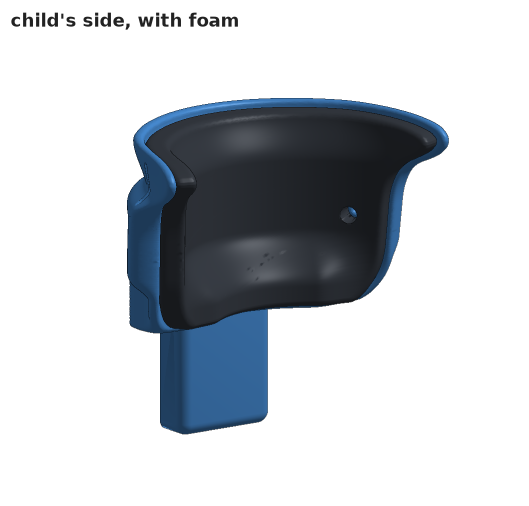
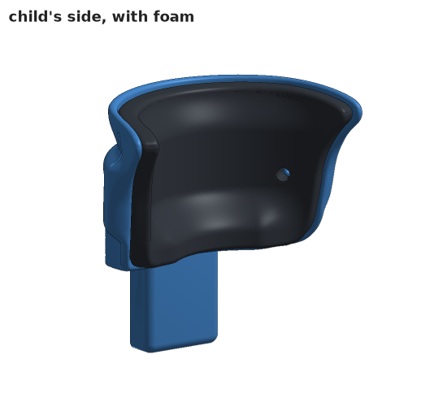
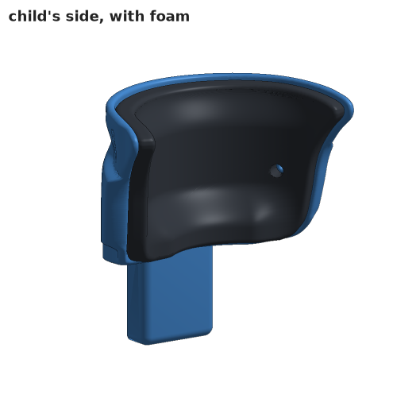
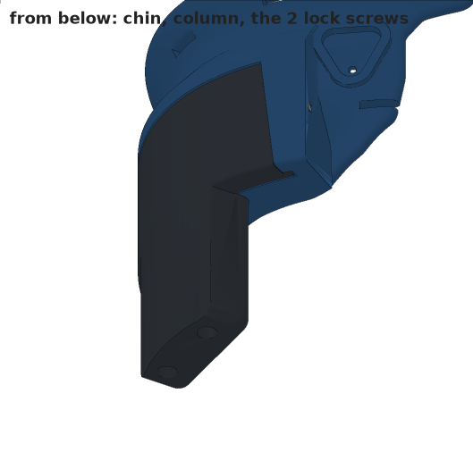
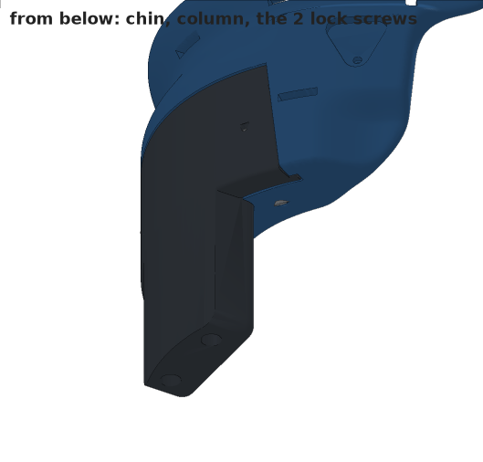
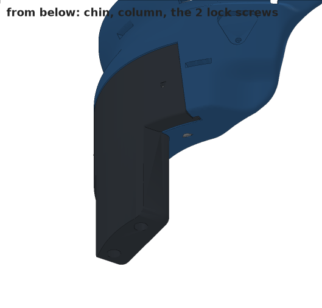
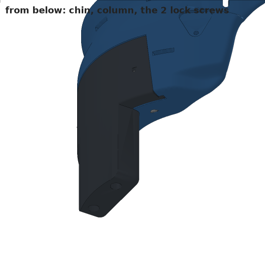
How it goes together
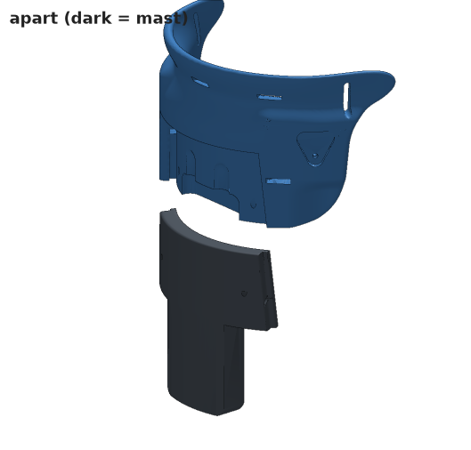
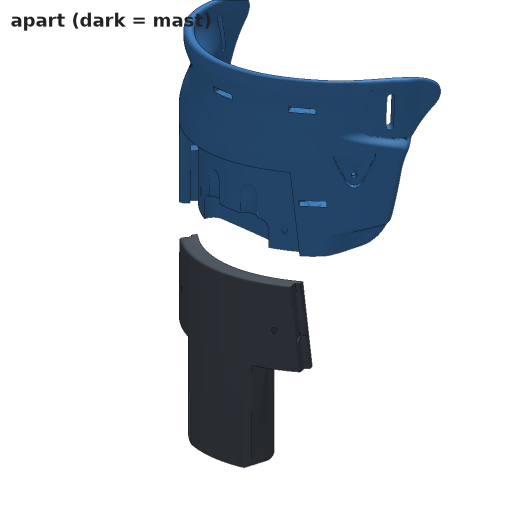
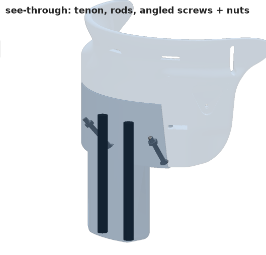
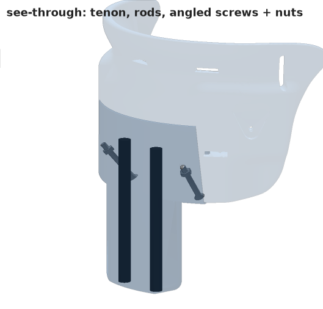
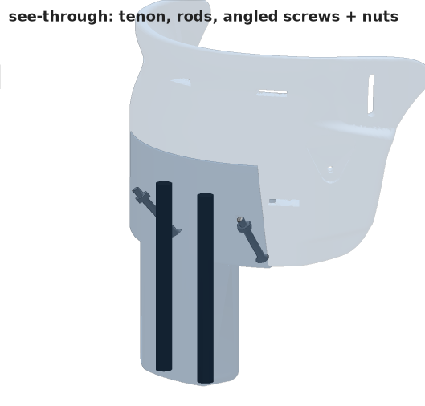
The lock: K2 with nuts, screws you can reach
- The tapered channel and lips from K2 are unchanged: the pad drops on and wedges tight. The two carbon rods are unchanged too.
- With a flowing back there are no flat side faces left for K2's side screws. The two M3×30 screws now go in from under the chin, angled 35° up into the tenon.
- Each screw goes into a captive M3 nut that slides into a slot in the tenon's side edge. That edge is hidden inside the channel once the pad is on.
- The screw heads are on the underside, clear of the foam. The model shows a screwdriver path to each head that is not blocked by foam or plastic. Nothing shows from behind.
- The button-mount screw goes in from the head side, as before. There is now a Ø9 hole in the foam over it, so you can reach it without taking the foam off.
The model shows no clashes for any of the three: pad vs mast, screws, foam and the button mount, and sliding on from 70 mm above. The rods sit fully inside the mast, and nothing touches either head model.
Fixed in the F3 base: the top rim of the button pocket.
Why F2
It flows best: one outline curve, a back that is thick only where it needs to be, and no ledge at the shoulder. F3 is the more "solid" look but has a shoulder line at button height. F1 keeps today's outline if you'd rather not change the shape.